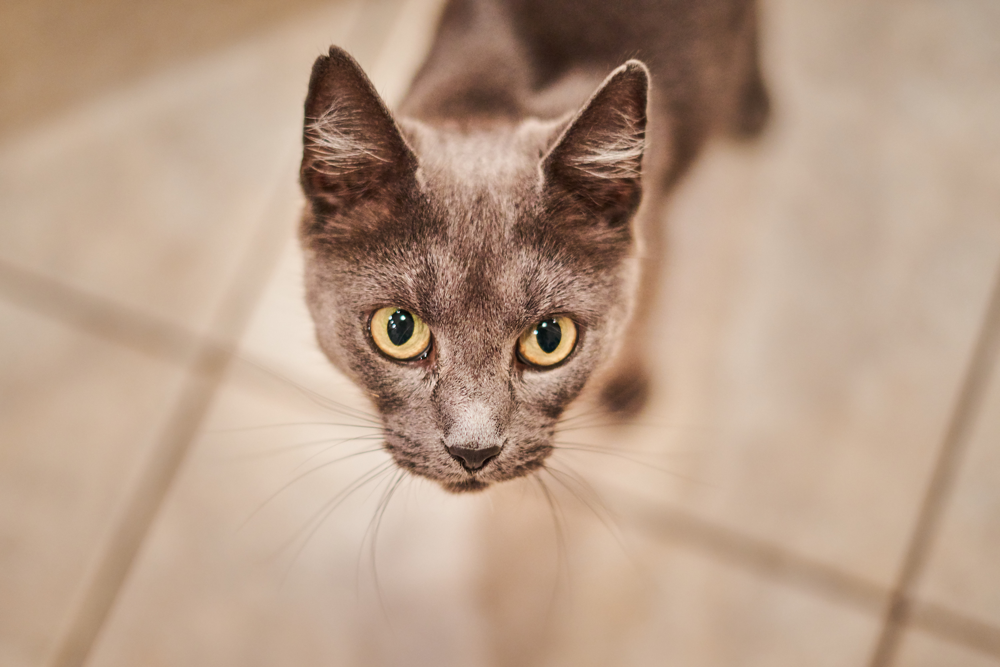

Porci
Porci (Porcica) kék, azaz szürke színű, és szívesen csavarog.
Kedvenc tevékenységei:
- nyalogatás
- szeretetteljes nézés
- (be)pisilés
Különleges viselkedés: időnként felugrik az ember vállára; széles váll esetén el is nyugszik rajta.
Porci (Porcica) kék, azaz szürke színű, és szívesen csavarog.
Kedvenc tevékenységei:
Különleges viselkedés: időnként felugrik az ember vállára; széles váll esetén el is nyugszik rajta.